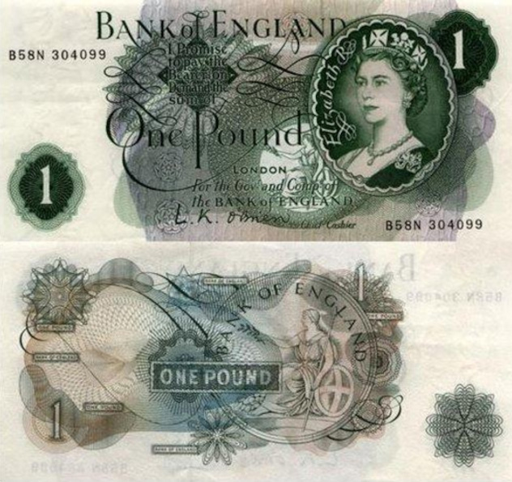

Валюта Англии. Денежные единицы Великобритании. Британская валюта
Официальной валютой Соединенного Королевства Великобритании и Северной Ирландии является фунт стерлингов. На данный момент это старейшая из мировых валют, которая использовалась постоянно. Этимология его названия уходит во времена Древнего Рима, ведь на латыни термин «баланс веса» будет звучать как «libra pondo». Римские корни проявились и в символе национальной валюты Британии – £. Он образован от буквы «L» (libra). Долгое время фунт оставался мерой веса или денежно-весовой единицей, ведь из фунта серебра 925-й пробы чеканили 240 мелких монеток-стерлингов, равнявшихся одному пенни.
Физическое воплощение фунт стерлингов обрёл в конце XVII века, когда 27 июля 1694 года был учреждён Банк Англии с целью скорейшим образом собрать средства на восстановление королевского флота, разгромленного Францией. В 1695 году создаётся Банк Шотландии для поддержки местных предпринимателей. Оба учреждения наделили правом печати банкнот, номинированных в фунтах стерлингов. Так фунт закрепился в виде основной денежной единицы Англии и Шотландии, а затем стал и официальной валютой для Соединённого Королевства в качестве национальной денежной единицы Великобритании.
Как менялся внешний вид банкноты
Датой рождения первой стодолларовой банкноты считается 1862 год. Однако номинал 100 долларов присутствовал на американских денежных знаках и ранее. Примером можно привести казначейский вексель 1812 года. Это был период, когда жители США в качестве средства платежа использовали только монеты, а организации, исполняющей роль центрального банка, не существовало. С началом англо-американской войны правительство США для покрытия возросших расходов решило выпустить казначейские векселя. Однако это ещё не полноценная банкнота, а краткосрочное долговое обязательство, предполагавшее вместе с возвратом суммы выплату небольшого процента. Выпуск подобных казначейских билетов строго регулировался. Хотя общая эмиссия составила 37 миллионов долларов, в обращении одномоментно не могло находиться билетов на сумму более 17 миллионов долларов. Подобным инструментом покрытия расходов казны пользовалась и Российская империя, выпускавшая собственные казначейские билеты с 1831 года.
Монетным аналогом фунта стерлингов долгое время был золотой соверен, в 1817 году пришедший на смену гинее, но не сумевший окончательно вытеснить её из расчётов. Соверен законодательно приравняли к 1 фунту. Новая монета поначалу пользовалась низкой популярностью. Если в первый год отчеканили 2 347 230 монет, то на следующий год их количество чуть превысило три с половиной тысячи. В тот период население предпочитало банкноты металлу. В Англии и Уэльсе пришлось даже запретить выпуск банкнот достоинством менее пяти фунтов.
Термин «Decimal Day» - стартовая точка современного денежного обращения Соединённого королевства. С 15 февраля 1971 года в Великобритании используется новая денежная система. Шиллинг становится историей. Официальной денежной единицей по-прежнему остаётся фунт стерлингов. Однако теперь его составляют сто новых пенсов (в начале 1980-х гг. слово «новый» из названия разменной денежной единицы убрали). Первые однофунтовые монеты появились в обращении в 1983 году.

Банк Англии постепенно завершает переход с бумажных банкнот на полимерные. Сейчас линейку действующих банкнот составляют шесть купюр четырёх номиналов. 20 и 50 фунтов на бумажной основе останутся средством платежа до 30 сентября 2022 года. Далее рассчитываться будут лишь полимерными банкнотами английской валюты. Однако население не впадает в панику, так ряд кредитных организаций продолжит приём денег старого образца на депозит. Приём бумажных банкнот останется обязательным для почтовых отделений. Кроме того, обмен без каких-либо ограничений станет производить сам Банк Англии.